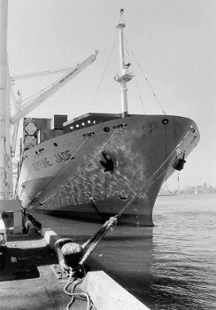

The Story of the Neptune Jade
 On September 28, 1997, a picket line was set up in the port of Oakland against the scab cargo-laden ship, Neptune Jade, in solidarity with 500 sacked Liverpool dockers. While this was not an IWW initiated campaign, many of the participants and organizers of these picketlines were members of the Bay Area IWW.
Members of ILWU Local 10 refused to cross the picketline for three straight days. The Neptune Jade then left Oakland with its cargo still unloaded, but workers in its later ports of call having been inspired by the actions in Oakland, also refused to unload the ship!
Global shipowners, represented by the Pacific Maritime Association (PMA), sued the labor activists who picketed and the longshore union locals whose member honored that picket line. The Liverpool Dockers Defense Committee was organized to build a united front defense campaign to demand PMA drop their case against the Neptune Jade defendants.
Through a campaign of global solidarity, the working class organizers and militant rank & file transportation union workers and their allies were able to beat back the backlash from the Pacific Maritime Association. Here are some of the accounts of this story:
Workers Victorious:
- PMA Finally Drops Neptune Jade Lawsuit - By Steve Stallone - ILWU Dispatcher, November 1998
- Never Cross a Picket Line - A Message From the Swedish Dockworkers Union, October 1998.
The Neptune Jade Pickets (September 1997)
- Dockworkers Refuse Scab British Cargo - By David Bacon, San Francisco Bay Guardian, October 8, 1997.
- The Saga of the Neptune Jade - by Ellen Starbird, November 1997.
- The Ballad of the Neptune Jade - Anonymous, July 1998.
The PMA Lawsuit (October 1997 - November 1998)
- 500 Rally For Neptune Jade Defendants - By Steve Zeltzer, February 1998.
- Students, Activists Sued for Blocking Port With Protest - by Rinat Fried, The Recorder, February 27, 1998
- Judge Dismisses Some Neptune Jade Cases - Text of a leaflet issued March 22, 1998.
- Labor Protests Neptune Jade Lawsuit - March 4, 1998, San Francisco Bay Guardian
- Fate of the Neptune Jade - by Alexander Cockburn, The Nation, March 23, 1998.
- Billy Bragg Interview by Kazmi - Labor on the Job, Bay Area Guinness Fleadh - June 1998
- Steve Zeltser interviews Chumbawamba vocalist Alice Nutter - Labor on the Job, Bay Area Guinness Fleadh - June 1998.
- ILWU Closes Port for Courthouse Rally for Neptune Jade Defendants - by Ellen Starbird, September 1998.
- ILWU Wins Another Round in Neptune Jade Case - by Steve Stallone, ILWU Dispatcher, September 1998.
- Shipping Firms Sue To Halt Dock Strikes - Associated Press newswire, reprinted in the San Francisco Chronicle - September 13, 1998.
- World Labor Solidarity: The Bosses Worst Nightmare - The Industrial Worker October 1998.
- Defending Workers' Rights - by Jack Heyman, Journal of Commerce, October 1998
- The ILWU Defends Its Proud Tradition, a guest editorial by Jack Heyman - San Francisco Chronicle, October 5, 1998
- Resolution by the California Labor Federation, AFL-CIO, August 1998.

Wobblies and other workers picket the entrance to Berth 23 on Maritime Street in the port of Oakland, California in September, 1997. The Neptune Jade (above, right), left Berth 23 after three days, its cargo still fully loaded.